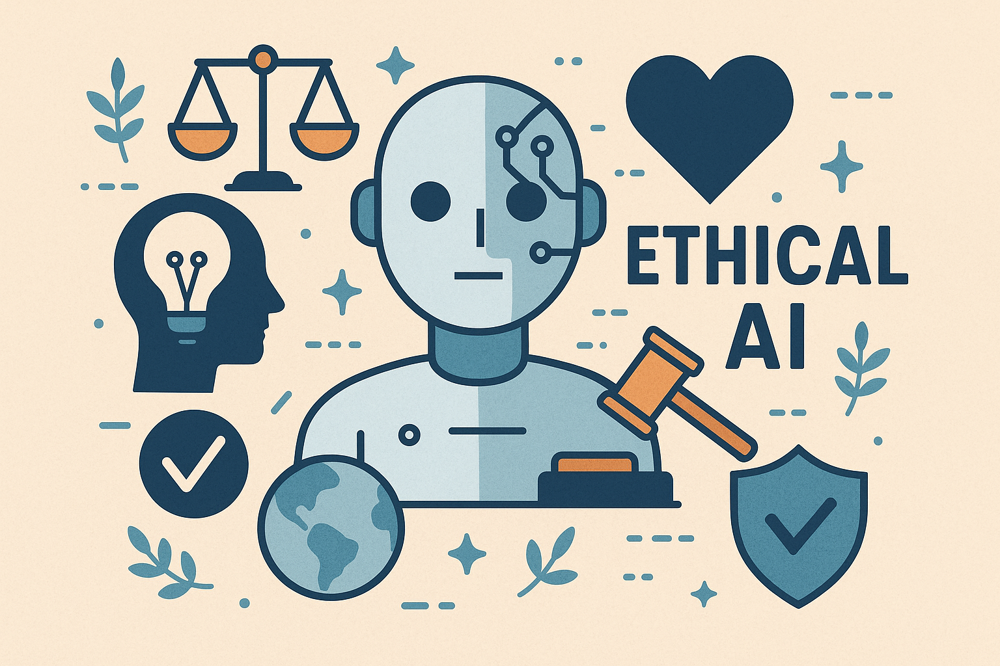

Latest Blogs

What is Artificial Intelligence, Really?
A deep dive into what AI truly means beyond buzzwords, exploring how it learns, thinks, and impacts our world. Discover how understanding AI’s real nature helps shape its responsible future.
Read on Medium

Why Ethical AI Must Start With Youth
A passionate call to action for empowering the next generation through AI tools, not fear. Learn why teaching students to use AI responsibly is key to building a more ethical, innovative future.
Read on Medium
Beyond Algorithms: Who Decides What’s Fair?
Exploring how AI can transform classrooms, empower teachers, and inspire students, while keeping ethics and humanity at the core of learning.
Read on Medium